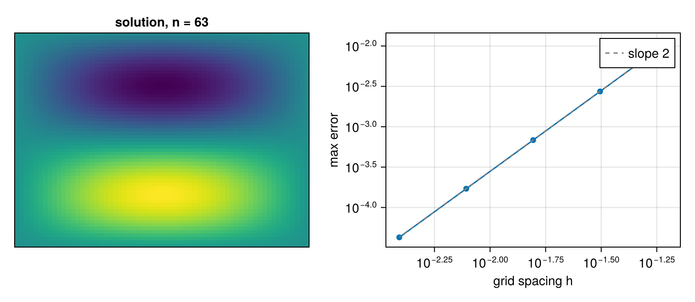

Solving Poisson's equation with the DST
Find $u$ on the unit square with $-\Delta u = f$ and $u = 0$ on the boundary. Finite differences on the $n × n$ interior grid turn this into a linear system with the five-point Laplacian. That matrix is diagonalised by the sine functions, which is exactly what the DST-I computes. So the system is solved by three steps: transform, divide by the eigenvalues, transform back.
The test problem has a known answer, $u(x, y) = \sin(\pi x)\sin(2\pi y)$, so the error is measured, not estimated. Then $f = 5\pi^2 u$.
using FFTL, CairoMakie, LinearAlgebraThe eigenvalues of the 1D second difference with Dirichlet conditions are 2 - 2cos(jπh) over h², and the 2D eigenvalues are their sums, Λjk = λj + λ_k. Dividing the DST coefficients by Λ and transforming back solves the system; the inverse DST-I multiplies by 2(n+1) per dimension, which is why the result is divided by (2(n+1))².
function poisson_solve(n)
h = 1 / (n + 1)
x = [i * h for i in 1:n]
uex = [sin(π * xi) * sin(2π * yj) for xi in x, yj in x]
f = 5π^2 .* uex
λ1 = [(2 - 2cos(j * π * h)) / h^2 for j in 1:n]
Λ = [λ1[j] + λ1[k] for j in 1:n, k in 1:n]
F = FFTL.r2r(f, (FFTL.RODFT00, FFTL.RODFT00), (1, 2))
F ./= Λ
u = FFTL.r2r(F, (FFTL.RODFT00, FFTL.RODFT00), (1, 2))
u ./= (2 * (n + 1))^2
u, uex
end
function poisson_error(n)
u, uex = poisson_solve(n)
maximum(abs, u - uex)
endpoisson_error (generic function with 1 method)Halving the grid spacing should divide the error by four (second order):
errs = [poisson_error(n) for n in (31, 63, 127)]
for (n, e) in zip((31, 63, 127), errs)
println("n = ", n, ", max error ", round(e; sigdigits = 3))
end
println("ratios: ", round.(errs[1:end-1] ./ errs[2:end]; digits = 2))n = 31, max error 0.00273
n = 63, max error 0.000683
n = 127, max error 0.000171
ratios: [4.0, 4.0]The numerical solution for n = 63, next to the convergence over a wider range of grid sizes against the slope-two guide:
u, uex = poisson_solve(63)
nvec = (15, 31, 63, 127, 255)
h = [1 / (n + 1) for n in nvec]
errs = [poisson_error(n) for n in nvec]
fig = Figure(size = (760, 330))
ax1 = Axis(fig[1, 1]; title = "solution, n = 63")
hidedecorations!(ax1)
heatmap!(ax1, u)
ax2 = Axis(fig[1, 2]; xscale = log10, yscale = log10, xlabel = "grid spacing h",
ylabel = "max error")
scatter!(ax2, h, errs)
lines!(ax2, h, errs)
lines!(ax2, h, errs[1] .* (h ./ h[1]) .^ 2; linestyle = :dash, color = :gray,
label = "slope 2")
axislegend(ax2; position = :rt)
fig
The scaling
The DST-I applied twice multiplies by $2(n+1)$, which is why the inverse divides by $(2(n+1))^2$ in two dimensions. FFTL.r2r does not normalise, so this factor is part of the algorithm, not of the library. The cosine, sine and Hartley how-to lists the factor for each kind.
This page was generated using Literate.jl.